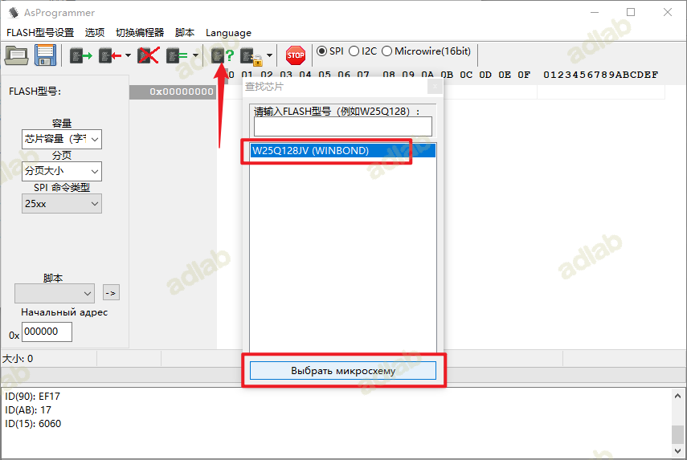

0x01 前言
看到群里开车小主机只要四百多，在犹豫之下买了一个，到手之后安装了个黑苹果(过程一路坎坷)，同事也买了个差不多的小主机说用起来有点卡，结果刷好之后直接丢吃灰了。
0x02 主机配置
型号：华硕chromebox3 cn62
cpu：i5-8250u
内存：海力士 4g*2 2400
固态：闪迪128g固态（原机自带sata协议的m2，插槽支持nvme和sata协议的m2固态，2280）
网卡：intel7265NGW网卡
买过来是chromebox的系统，需要刷bios才能安装系统。群友说可以把系统升级到最新这样子就不用编程器了，我是直接购买了编程器，直接嘎嘎乱刷。
0x03 编程器相关
3.1编程器软件和驱动安装
编程器软件
安装编程器驱动
进入 CH341-Drivers 驱动目录
进入 CH341Parallel_driver_support WIN7 目录
选择 CH341PAR.EXE

点击安装即可
3.2编程器架子用法
按照我这种插法就行
cms 芯片在 bios 电池旁边，很容易就找到了，夹夹子是有讲究的，要一侧对着 cms 芯片的，夹子的一侧要与 cms 小芯片相对，当一边对上之后在自然的放开(切勿直接垂直夹着，那样大几率对不准，这里是新手的坑点，小主机不用通电)
3.3刷写 BIOS
上述操作都完成之后，我们就可以打开刷写 bios 的软件了，如下图，点击检测 FLASH 型号，如果提示 fff 就是夹子没夹好，重新把夹 cms 芯片的夹子重新对准并从新夹。
还有一种报错，提示 在连接至 USBAsp 时发生错误CH341(-1) 这种一般是插错了，检查一下上述操作。笔者在开始的时候也是疯狂报错。
当上述操作都正确的时候，点击检测 FLASH 芯片则会提示以下信息，选择 FLASH 芯片要选择 W25Q128JV(WINBOND)

选择 bios 刷机程序，我这边选择的是 g2corebot.bin
选择好之后，点击自动执行即可
已经在刷机了
当写入成功会有相关提示，例如下图，说明刷写完成
刷机成功后，再次开机是 coreboot 兔子 BIOS(感觉这个 bios 有 bug，有的时候进 bios 设置会卡死，如果常见时间没动那就直接断电在重新开吧)

进入 bios 是这样子的界面
接下来的操作就简单了，和安装系统差不多了，根据自己得喜好安装 Windows 系统或者黑苹果，笔者这边喜欢用黑苹果，所以搞个黑苹果
0x04 安装 MACOS
4.1制作启动盘并刻录
macOS Ventura 13.4.1 (22F82)
https://www.aliyundrive.com/s/gDSytaiiVfa
镜像下载好之后使用 etcher 工具刻录到 U 盘
https://www.balena.io/etcher

这里就看你U盘的速度了
换了个固态烧的很快很快
4.2下载 efi 引导文件
https://github.com/sqlsec/Asus-ChromeBox-i7-8550U/releases/download/1.0/EFI.zip
将引导 EFI 引导拷贝到 U 盘里这样就可以直接引导了
4.3开始安装 MACOS
开进按 esc 进入 bios，选择需要的引导盘即可
然后选择「Install macOS Ventura」
4.3.1格式化磁盘
进入系统之后
点击显示所有设备
找到你的固态选择 抹除
填写名称，格式选择 APFS, 方案选择 GUID 分区
抹盘完成后关掉窗口：
4.3.2第一遍进度条
点击安装 MAC OS
选择继续
点击同意
选择你刚刚格式化的磁盘

接着会开始从 U 盘中拷贝镜像写入到硬盘中(这里很慢很慢，等等吧)

4.3.3第二遍进度条
上述安装好之后会重启系统，继续选择我们的 U 盘引导
选择 macOS Install
会在等待一次进度条(这个进度条后面会显示安装的剩余时间，我们耐心等待即可。)
上面的进度条走完之后会自动重启，继续选择 U 盘启动
4.3.4第三次进度条
继续选择 macOS Install, 会继续走一遍进度条, 耐心等待
继续耐心等待，又要跑一次进度条
4.3.5第四次进度条
继续选择 U 盘引导

此时 OC 的界面如下，可以看到我们之前自定义名称的 Mac 格式的硬盘出现了
选择 MACOC, 这个时候会再走一次进度条
4.3.6第五遍进度条
继续选择 U 盘引导
选择我们自定义的硬盘名称，这个时候会再走一次进度条，这次进度条不会重启了，顺利的话会进入到苹果的初始化界面。
4.3.7初始化设置
上面步骤顺利的话会来到苹果的初始化设置界面，选择中国
点击继续即可
选择以后
为了快速结束安装过程，选择 我的电脑不接入互联网
选择继续
选择以后
选择同意即可
输入自己得用户名密码等信息
选择继续
选择继续
根据自己喜好去选择外观
成功进入系统
0x05 BUG 解决
5.1无线网卡
既然都用了黑苹果了，肯定想更好的体验他的功能，直接买了个苹果免驱网卡BCM94360CS2，需要在买一个转接卡，大概在58左右，插上去之后直接是免驱的(这里遇到个贼坑的地方，我买个了网卡转m.2的死活找不到蓝牙，后面还重新购买了个网卡，最后才发现是转换卡的问题，谁能想到这么坑，如果遇到我这种问题的先去windows里看看能不能读出来读不出来就去找闲鱼卖家)
5.2有线网卡
安装好之后有线网卡用不了，根据国光博客的方法修改网卡的配置文件
编辑 OC/Kexts/RealtekRTL8111.kext/Contents/Info.plist 文件，找到 fallbackMAC 然后把机器底部的 Mac (Windows 下查看也可以，使用ipconfig /all命令查看) 填进去，像下面这样。（可以使用 windows 直接打卡找到以下文件进行编辑，如果在机身背部没有找到网卡信息，可以进入 PE 读取网卡信息，把网卡信息填到以下文件即可）
<key>fallbackMAC</key>
<string>00:00:00:00:17:AF</string>
5.3调节亮度
使用 MonitorControl 来设置调节显示器的亮度和声音
5.4声音输出
需要自行购买usb转换机这样子可以插耳机，如果不想购买usb转换器可以使用蓝牙耳机
0x06 其他小技巧
6.1挂载磁盘引导分区
因为现在的 EFI 放在我们的 U 盘的 EFI 分区下，这样不能每次都插着 U 盘启动吧，所以我们得到 PE 下将 U 盘里面的 EFI 文件夹放到 1TB 硬盘的 EFI 分区下：
首先下载好 OCC 工具，这个工具就算不挂载也是黑苹果必备工具了，
OCC 官网下载地址为：https://mackie100projects.altervista.org/download-opencore-configurator/
打开之后，选择右上角的 OC 图标，点击，找到自己的安装系统的硬盘，点击「挂载分区」：
输入你的电脑密码
点击打开分区
把引导文件拷贝到这里面
至此完成了，只需要在 bios 里设置一下引导即可。
6.2定制USB
检测工具：https://github.com/USBToolBox/tool/releases/tag/0.1.1
通过终端打开
输入 C，按下回车进入设置界面
打开 T 和 N 两项，分别输入 T 回车，N 回车即可打开，完成后按 B 返回上一个界面，下面操作方式一样，不再赘述。
T 选项就是打开接口类型提示，N 选项会把生成的 kext 内部调整为调用 macOS 原生类 AppleUSBHostMergeProperties，这是比较好的方法，原因如下（不想读可跳过，无影响）：
- USBToolBox 生成的最终 USBMap.kext 其实是一种“Codeless Kernel Extensions”，字面意思是无代码核心扩展（简称 codeless kext），其核心作用是使新设备与现有驱动程序匹配。
- codeless kext 是不包含可执行文件的核心扩展包（kext bundle），其中 info.plist 的 IOKitPersonalities 节点（字典类型）会在遇到匹配的新设备时使之与现有的驱动程序（kext）匹配。而后者都必须具有一个可执行文件。codeless kext 通常用于驱动用户的 USB 和 HID 设备（HID：Human Interface Device，例如触摸设备等）。由于内核驱动程序实现了标准协议，因此这些类别中的几乎所有设备都可以使用它。
- 打开 USBToolBox 的这个选项，其生成的 USBMap.kext 会将 USB 端口上的设备共享到 macOS 提供的通用驱动程序 AppleUSBMergeNub.kext，以实现驱动 USB 设备，而不必通过其他方式中转。
返回主界面后使用 D 选项开始识别 USB 接口
使用 USB3.0 的 U 盘挨个插拔一遍接口（包括机型前部接口），注意每次插拔间隔不要过快(建议5s以上)，插上后，等系统正确识别出 U 盘，再安全移除设备。如果有Type-C接口，建议正反面都插一次，全部插完后，按B返回主界面。
下一步，按下 S 回车创建 USBMap.kext
按下 K 回车创建 USBMap.kext(如果超过15个需要删除多余的)
下面就是接口选择和 Kext 创建界面：
按下 K 回车创建 USBMap.kext，此时可能弹出这个界面：
这是因为这里选择了使用原生 AppleUSBHostController，在 Windows 中是无法识别 Mac 机型的，其实就是 SMBIOS ID（机型 ID），所以这里把笔者的机型手动输入：Macmini8,1
这个机型 ID 可以通过 macOS 的终端命令来提取：
system_profiler -detailLevel mini SPHardwareDataType
运行后，终端会输出类似下面的结果：
Hardware Overview:
Model Name: iMac
Model Identifier: iMac20,1
Processor Name: 10-Core Intel Core i9
Processor Speed: 3.7 GHz
Number of Processors: 1
Total Number of Cores: 10
L2 Cache (per Core): 256 KB
L3 Cache: 20 MB
Hyper-Threading Technology: Enabled
Memory: 32 GB
System Firmware Version: 1554.100.64.0.0
其中的 Model Identifier 就是我们需要的信息，这个其实也可以通过 → 关于本机 → 系统报告 → 硬件 → 硬件概览 来获取，第二项“型号标识符”就是。然后返回 Windows，输入到 USBToolBox 即可。
如果你忘了自己的机型又不想切换回 macOS，可参考
最后，生成的 USBMap.kext 会出现在软件的目录里，拷贝下来，或使用 Diskgenuis 等软件把它拷贝到 EFI 目录
如果选择直接回到 macOS，手动把 USBMap.kext 放到 EFI 目录：
- Clover 放到 /EFI/CLOVER/Kexts/Others（或其它数字命名的文件夹如果你知道是起什么作用的话）
- OpenCore 放到 /EFI/OC/Kexts/
最后重启进入macOS系统。
0x07 参考地址
http://imacos.top/2022/08/22/windows-usb-macos-bigsur-11-3-usbtoolbox/
https://apple.sqlsec.com/6-%E5%AE%9E%E7%94%A8%E5%A7%BF%E5%8A%BF/6-1.html